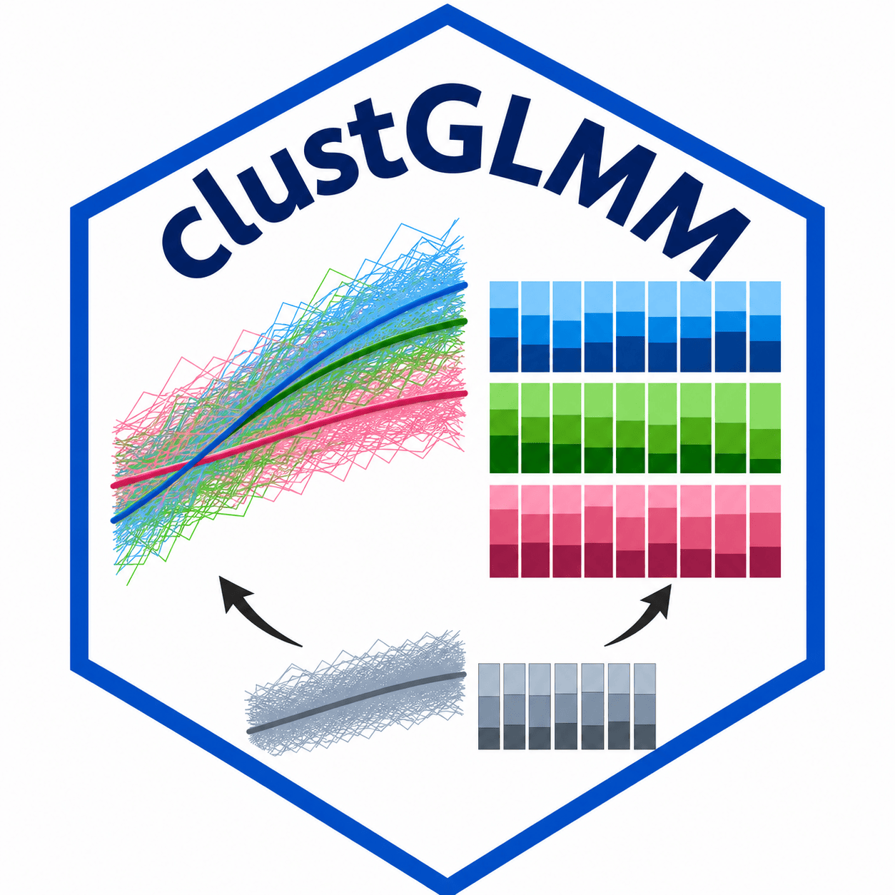

NA
Editor
The R Journal
Dear Dr. Tanaka,
We would like to submit our article titled “The R Package clustGLMM - Clustering Longitudinal Data of Mixed Type” for possible publication in the R Journal.
Our submission introduces the new package called clustGLMM, which implements Bayesian clustering of longitudinal data of mixed type (metric, count, binary, ordinal, and nominal). The underlying statistical methodology has been introduced in Vávra et al. (2024) and the package provides a consolidated, user‑friendly software implementation suitable for applied researchers which covers model estimation and inference including suitable post-processing tools. The article provides the core guidance on the use of the package and illustrates its functionality through a reproducible example. A more extensive illustrative analysis is available in the package vignette. For readers seeking technical depth, the supplementary materials offer a detailed discussion of each component of the methodology and its implementation.
Over the past years, we have received numerous inquiries regarding the availability of the source code for our methodology. With clustGLMM now released on CRAN, we hope to make these tools accessible to a broad community of statisticians and data scientists working on clustering problems. We believe that the accompanying article will help users understand the intended workflow and practical considerations behind the implemented functions.
Thank you for your consideration.
Regards,
Jan Vávra
Department of Probability and Mathematical Statistics
Faculty of Mathematics and Physics
Charles University
Prague, Czech Republic
vavraj@karlin.mff.cuni.cz